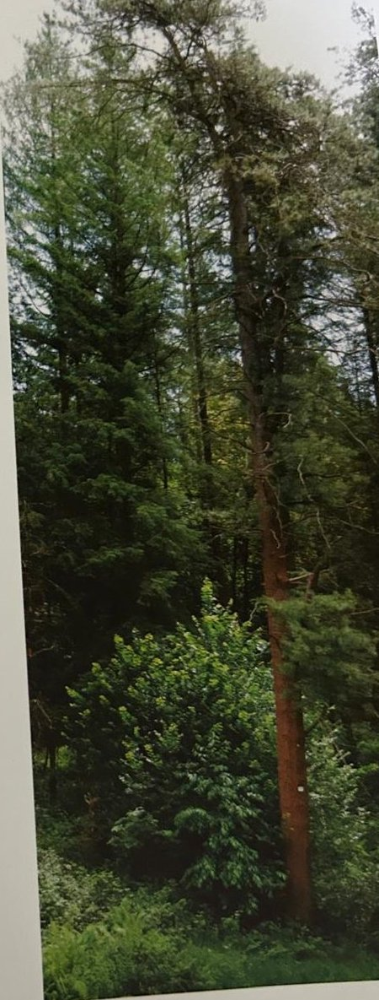

Groepen › Nieuwe Wereld
8. Idaho & Montana, Noordelijk Rotsgebergte

Arboretumgroep 8 wil een beeld geven van de bossen in het middendeel van de Rocky Mountains, in de noordelijke Verenigde Staten. Ook hier is een zekere gradatie toegepast naar gelang van de hoogteligging in de bergen. Loofhout in laaggelegen valleibossen is wellicht wat ondervertegenwoordigd met alleen Balsempopulier en Rode els, alomtegenwoordige Amerikaanse trilpopulieren en wilgen ontbreken. In lagere bergzones ontmoeten we weer onze vertrouwde Douglasspar, Hemlockspar, Reuzenlevensboom en Reuzenzilverspar. Hogerop groeien meer Westamerikaanse lork, -deze enkel in het noordwesten, in Idaho- en dennensoorten : Draaiden, Ponderosaden, Westerse Witte den, Suikerden. Onder de subalpiene soorten tegen de boomgrens aan bevinden zich Engelmanspar, Berghemlock en Rotsgebergtezilverspar. De laatste is wel van nature klein en gedrongen, maar lijkt hier toch ook moeite te hebben om te overleven in minder aangepaste omstandigheden.
Uit het boek
6,27 ha · 27 soorten · 2366 bomen
- Het noordelijke Rotsgebergte in vijf subgroepen: gele den (8B), westerse lork (8C), roestresistente witte den (8D) en soepele den (8E).

Bron: Geografisch Arboretum Tervuren. Een wereldreis rond bomen (2020), p. 120 en volgende.
Deelgroepen
- 8A – Gemengd Thuja-Douglas bos - Laag en middengebegte
- 8B – Gemengd Ponderosa bos - Laaggebergte
- 8C – Gemengd Douglas-Larix bos - Midden en hooggebergte
- 8D – Gemengd Witte-dennenbos - Noord-Idaho
- 8E – Subalpien gemengd Sparrenbos - Hooggebergte
Soorten in deze groep (27)
- Pseudotsuga menziesiiGewone douglasspar · 639 bomen
- Thuja plicataReuzenlevensboom · 577 bomen
- Abies grandisReuzenzilverspar · 297 bomen
- Picea engelmanniiEngelmannspar · 225 bomen
- Pinus monticolaAmerikaanse witte den · 154 bomen
- Pinus ponderosaWesterse gele den · 124 bomen
- Pseudotsuga menziesii var. glaucaBlauwe douglasspar · 89 bomen
- Tsuga heterophyllaWest-Amerikaanse hemlockspar · 70 bomen
- Larix occidentalisWest-Amerikaanse lork · 39 bomen
- Abies lasiocarpaRotsgebergtezilverspar · 32 bomen
- Tsuga mertensianaBerghemlock · 23 bomen
- Alnus speciesels · 20 bomen
- Pinus contortaDraaiden · 18 bomen
- Betula occidentalisWaterberk · 16 bomen
- Pinus contorta var. latifolia13 bomen
- Pinus ponderosa var. scopulorum9 bomen
- Acer circinatumAmerikaanse rondbladesdoorn · 5 bomen
- Populus trichocarpaWest-Amerikaanse balsempopulier · 3 bomen
- Salix exiguaSmalste wilg · 3 bomen
- Ledum glandulosum2 bomen
- Pinus flexilisLenige den · 2 bomen
- Quercus garryanaOregon witte eik · 2 bomen
- Betula pumila1 boom
- Cephalanthus occidentalisKogelbloem · 1 boom
- Philadelphus lewisii1 boom
- Physocarpus opulifoliusGewone blaasjesvrucht · 1 boom
- Rosa species1 boom
Tekst en foto: arboretum-tervuren.be (Koninklijke Schenking), met toestemming gebruikt.